Android まったくわかんないわしが Nesus 6 を入れてまずやったこと。
公開日：
ソーシャルネットワーク、電子書籍……とりあえず使いそうなアプリ入れる
とりあえず iPhone でつかってたアプリをガシガシいれる。ガシガシガシガシ……
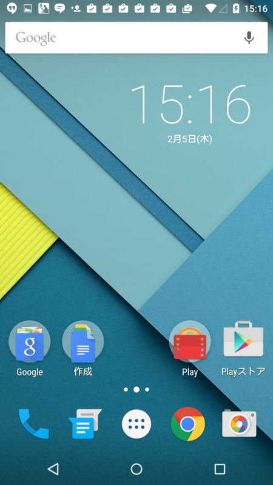 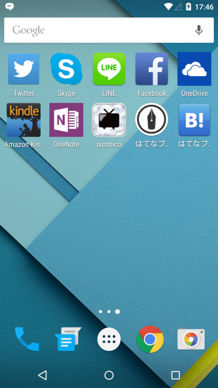
まぁ、WirelessMobileUtility あたりを除けば、ごくフツーのラインナップだと思う。
電池減るのが不安
いい感じのバッテリーレポートアプリないかな……と思っていくつか試してみた。余計な節電機能なんぞ要らん、バッテリーの減りがグラフ表示できて、どのアプリがバッテリー食ってるのかリストで晒してくれれば十分。あと、できたらデザインがいいアプリがよい。萌えとか、Visual Basic 風の色遣いとか要らん。
――というわけで、とりあえずこんなの入れてみた。
名前がド直球でよろしい。メインにはバッテリー残量がでっかく表示されていて、右へスワイプすると詳細が見れる。
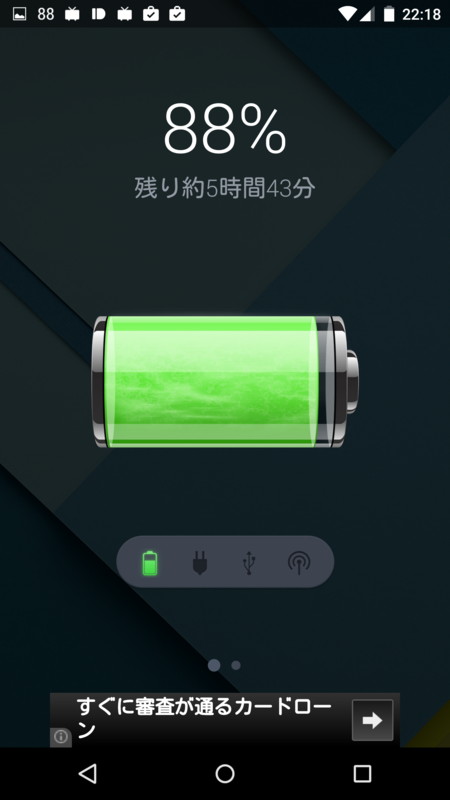 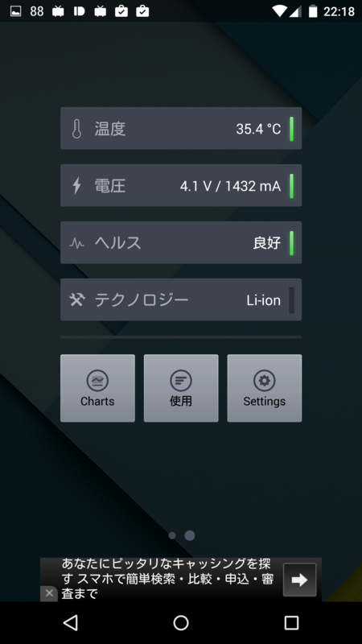
さらに詳細画面下のボタンを押すと、チャートやアプリごとのバッテリー消費が見られる。
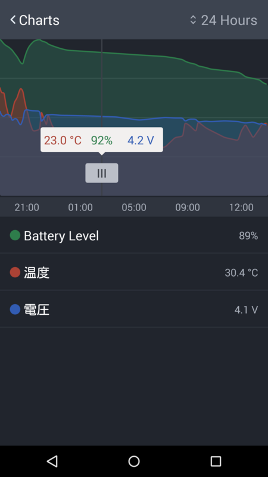 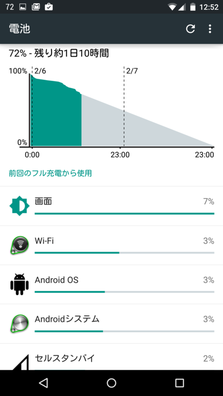
シンプルでいい。あと、ロック画面や左上の通知（0～100の数字）でバッテリー残量をチェックできるのもいいな。
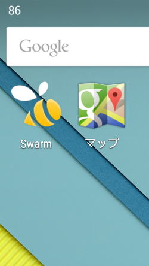 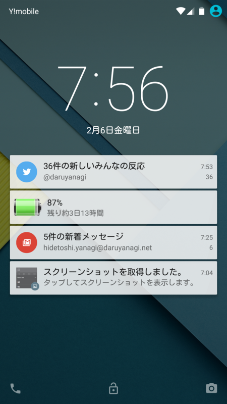
とりあえず、これを常用してみようかと思う。広告消えないかな？ お金出すけど。
マナーモードがない！？
Nesus 6 つかって不思議に思ったのは、マナーモードのボタンが見当たらないことだった。もしかしてない！？――わけない。Android 5.0 Lolipop にもちゃんとマナーモードはある。ただ、やたら高機能で、しかも初期設定ではワンボタンで呼び出せるようにはなってないということらしい。
――というわけで、マナーモードを簡単に切り替えられるウィジェットを探してみた。
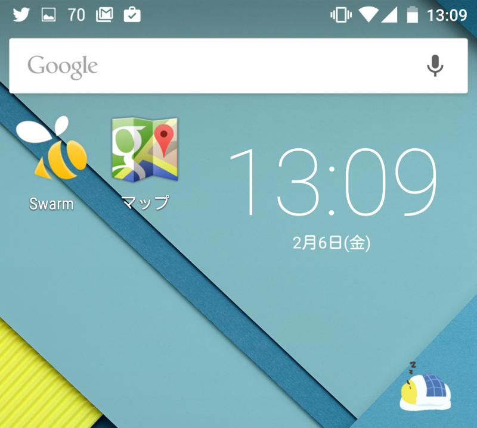 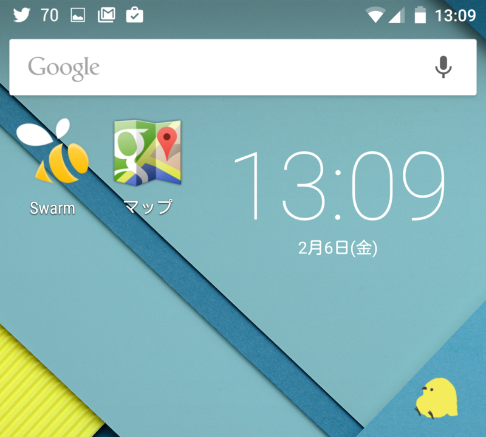
右下のヒヨコがそれ。起きていれば通常モード。タップしてマナーモードになるとお休みになられる。かわいい（小並
通知のバイブなんかも全部切るサイレントモードにもできるらしいけれど、自分は使わないので、単純に通常 ⇔ マナーモードの切り替えウィジェットとして使ってる。もっと高解像度で、アニメーションとかしてくれるとかわいいのにな、素材はクラウドワークスでお願いして、自分で作るか。
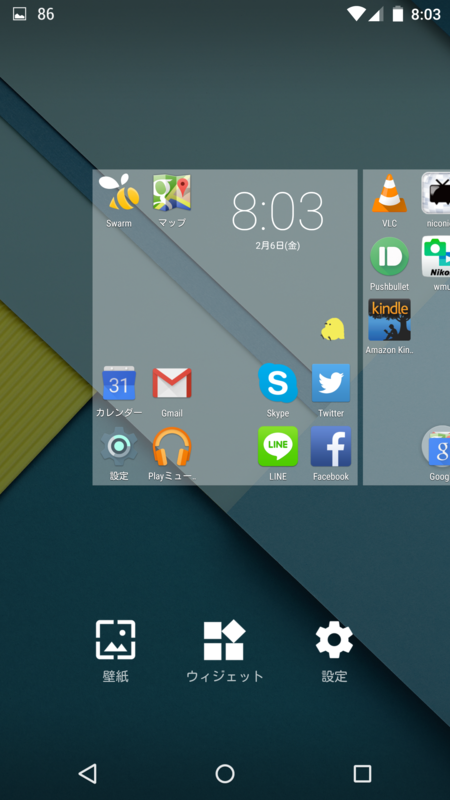 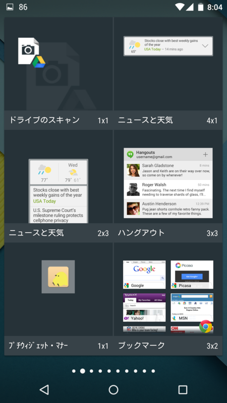
あと、これのおかげで、ホーム画面（ウィジェットなど）のカスタマイズ方法も覚えた。ホーム画面で何もないところでホールドすると設定画面に切り替わるので、そこでウィジェットを追加。アイコンやウィジェットはドラッグ＆ドロップで自由に移動（＆削除）できる。なるほろ。
そのほかにも、SUICA リーダーなんかが便利らしい。残念ながら伊予鉄カードでは使えなかったけど（そらそうだ）。カスタマイズはとりあえずこれでひと段落。あとはぼちぼちやっていくことにする。